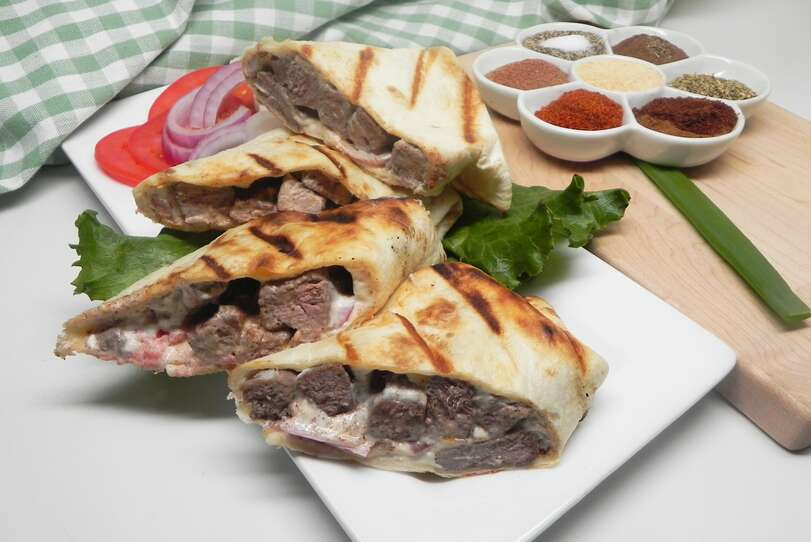

sharwama recipe

Description
a sweet delicious easy beef sharwama
Ingredients
Sharwama:
- 1 tablespoon olive oil
- 1 pound beef top sirloin, thinly sliced
- i tablespoon sharwama seasoning
- 1 teaspoon ground allspice
- 1/2 teaspoon salt
Tahini sauce:
- 1/2 cup Tahini
- 3 tablespoon plain yoghurt
- 1/2 lemon, juiced
- 1/2 teaspoon salt
- 1 (10 ounce) package large flour tortillas
- 2 tomatoes, halved and sliced
- 1 onion, thinly sliced
Steps
- Heat olive oil in a large skillet over medium heat. Add beef, shawarma seasoning, allspice, and 1/2 teaspoon salt; cook, turning occasionally, until beef is browned and tender, 3 to 5 minutes.
- Whisk tahini, yogurt, lemon juice, and 1/2 teaspoon salt together in a small bowl until creamy.
- Spread 1 to 2 tablespoons tahini sauce in the center of each tortilla. Divide beef slices, tomato slices, and onion slices evenly among tortillas. Roll up tortillas.
- Preheat a panini press according to manufacturer's instructions. Press rolled tortillas seam side-down until grill marks appear, about 2 minutes. Cut each tortilla into 4 to 5 pieces.